Show code
library(dplyr)
library(ggplot2)
library(scales)
library(forcats)
library(patchwork)
library(stringr)
library(tidyr)
library(grid)This chapter analyzes historical records retrieved from the Finnish National Bibliography (Fennica) through the Finna ecosystem. It characterizes publication growth over time, language distributions and language change, publication formats, and metadata completeness and quality.
Data path note. This chapter reads
nineteen_cen.rdsfrom~/finna/inst/extras/. Update the path in the chunk below if your local copy lives elsewhere.
library(dplyr)
library(ggplot2)
library(scales)
library(forcats)
library(patchwork)
library(stringr)
library(tidyr)
library(grid)The dataset contains historical Fennica records covering the nineteenth-century publication landscape in Finland.
nineteen_cen <- readRDS("~/finna/inst/extras/nineteen_cen.rds")Finnish language names and ISO language codes are converted into standardized English labels to improve figure readability.
# Human-readable language names
lang_map <- c(
"suomi" = "Finnish",
"ruotsi" = "Swedish",
"englanti" = "English",
"saksa" = "German",
"ranska" = "French",
"venäjä" = "Russian",
"latina" = "Latin"
)
# ISO 639 language codes
lang_code_map <- c(
"fin" = "Finnish",
"swe" = "Swedish",
"rus" = "Russian",
"deu" = "German",
"ger" = "German",
"eng" = "English",
"fre" = "French",
"fra" = "French",
"lat" = "Latin",
"est" = "Estonian"
)
# Combined lookup table
language_map <- c(lang_map, lang_code_map)
# Finnish format labels -> English labels
format_map <- c(
"kirja" = "Book",
"lehti/artikkeli" = "Journal article",
"opinnäyte" = "Thesis",
"kartta" = "Map",
"muu" = "Other",
"peli" = "Game",
"nuotti" = "Sheet music",
"teksti" = "Text",
"kuva" = "Image"
)Standardizes metadata labels by trimming whitespace, lower-casing, and translating known labels while preserving unknown ones.
label_en <- function(x, map) {
x0 <- tolower(trimws(x))
out <- unname(map[x0])
ifelse(is.na(out), x0, out)
}A muted colour palette and shared theme are used across all figures to ensure consistent, publication-ready styling.
quiet_pal <- c(
"Finnish" = "#2B2B2B",
"Swedish" = "#D89000",
"Other" = "#9E9E9E",
"Russian" = "#6BAA75",
"German" = "#D8C94A"
)
base_theme <- theme_minimal(base_size = 14) +
theme(
plot.title = element_text(face = "bold", size = 15, margin = margin(b = 8)),
axis.title = element_text(size = 14),
axis.text = element_text(size = 13),
legend.title = element_blank(),
legend.text = element_text(size = 14),
plot.margin = margin(t = 12, r = 14, b = 12, l = 28)
)Records lacking language or year information are removed, publication year is converted to numeric, decade is derived, language values are harmonized, and rare language categories are merged into “Other”.
nineteen_cen_clean <- nineteen_cen %>%
filter(!is.na(Language), !is.na(Year)) %>%
mutate(
Year = suppressWarnings(as.numeric(Year)),
Decade = floor(Year / 10) * 10,
Language_raw = tolower(trimws(Language)),
Language_lab = label_en(Language_raw, language_map),
Language_lab = ifelse(
tolower(Language_lab) %in% c("other", "others", "muu", "unknown", ""),
"Other",
Language_lab
)
) %>%
filter(!is.na(Year))
# Five most common publication languages
top_langs <- nineteen_cen_clean %>%
count(Language_lab, sort = TRUE) %>%
slice_head(n = 5) %>%
pull(Language_lab)
# Collapse remaining languages into "Other"
nineteen_cen_clean <- nineteen_cen_clean %>%
mutate(
Language = ifelse(Language_lab %in% top_langs, Language_lab, "Other")
)Logarithmic scaling is used because publication counts increase substantially through the nineteenth century.
p1 <- nineteen_cen_clean %>%
group_by(Decade) %>%
summarise(Publications = n(), .groups = "drop") %>%
ggplot(aes(x = Decade, y = Publications)) +
geom_col(fill = "grey35") +
scale_y_log10(labels = comma) +
labs(
title = "Publications in Fennica by decade (log scale)",
x = "Decade",
y = "Publications"
) +
base_theme
p1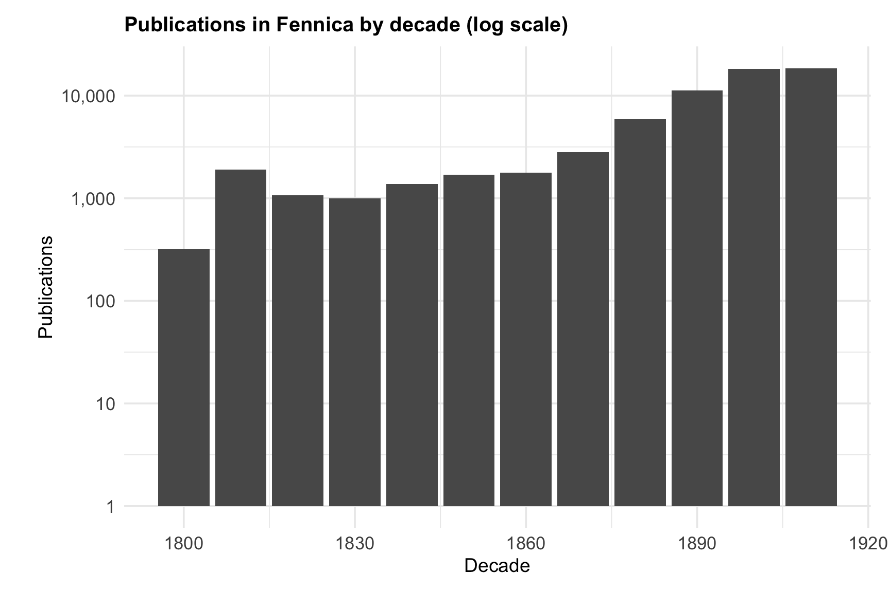
A LOESS smoother emphasizes long-term trends while reducing short-term fluctuations.
p2 <- nineteen_cen_clean %>%
group_by(Year) %>%
summarise(Publications = n(), .groups = "drop") %>%
ggplot(aes(x = Year, y = Publications)) +
geom_line(color = "grey35", linewidth = 0.5) +
geom_smooth(
method = "loess",
se = FALSE,
linetype = "dashed",
color = "grey55"
) +
scale_y_log10(labels = comma) +
labs(
title = "Annual publications in Fennica (log scale)",
x = "Year",
y = "Publications"
) +
base_theme
p2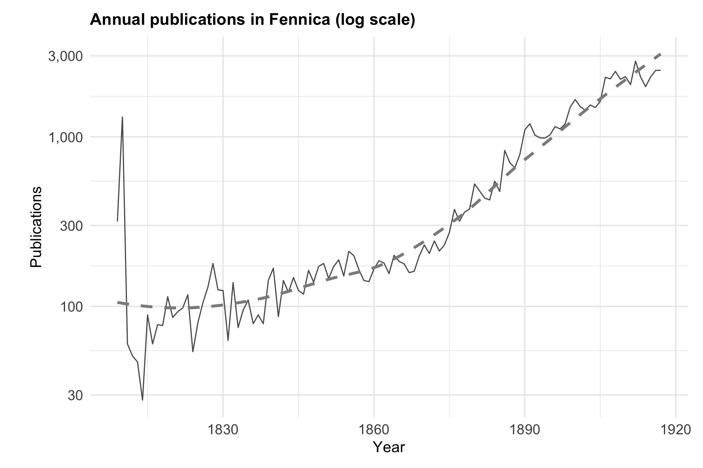
p3 <- nineteen_cen_clean %>%
count(Language, sort = TRUE) %>%
ggplot(aes(x = fct_reorder(Language, n), y = n)) +
geom_col(fill = "grey35") +
coord_flip() +
scale_y_continuous(labels = comma) +
labs(
title = "Most common publication languages",
x = "Language",
y = "Number of publications"
) +
base_theme
p3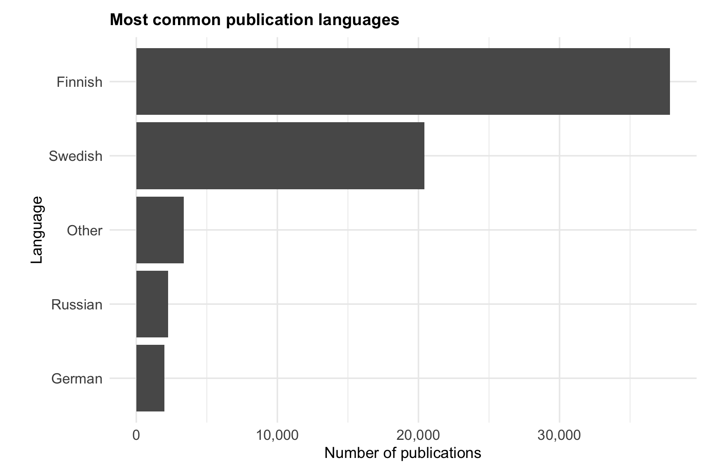
Publication counts are aggregated by decade and language for reuse in the composition and proportion figures below.
lang_trends <- nineteen_cen_clean %>%
group_by(Decade, Language) %>%
summarise(Count = n(), .groups = "drop")
lang_levels <- lang_trends %>%
group_by(Language) %>%
summarise(Total = sum(Count), .groups = "drop") %>%
arrange(desc(Total)) %>%
pull(Language)
lang_trends <- lang_trends %>%
mutate(Language = factor(Language, levels = lang_levels))Absolute publication counts by language for each decade, useful for examining growth and decline of individual language groups.
p4 <- ggplot(lang_trends, aes(x = Decade, y = Count, fill = Language)) +
geom_col() +
scale_y_continuous(labels = comma) +
scale_fill_manual(
values = rep(quiet_pal, length.out = nlevels(lang_trends$Language))
) +
labs(
title = "Language composition by decade",
x = "Decade",
y = "Number of publications"
) +
base_theme +
theme(legend.position = "none")
p4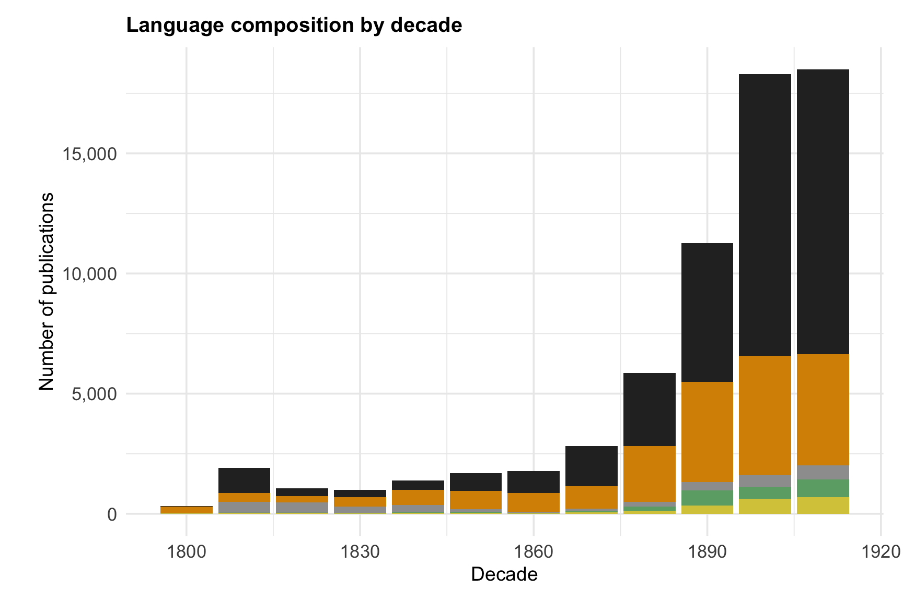
Changing language shares independent of collection size, highlighting shifts in linguistic dominance over time.
lang_share <- lang_trends %>%
group_by(Decade) %>%
mutate(Proportion = Count / sum(Count)) %>%
ungroup()
p5 <- ggplot(lang_share, aes(x = Decade, y = Proportion, fill = Language)) +
geom_col(position = "fill") +
scale_y_continuous(labels = percent_format()) +
scale_fill_manual(
values = rep(quiet_pal, length.out = nlevels(lang_trends$Language))
) +
labs(
title = "Language proportions by decade",
x = "Decade",
y = "Proportion of publications"
) +
base_theme +
theme(legend.position = "bottom")
p5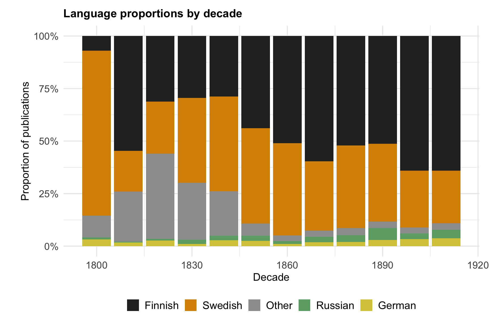
Log scale is used because format frequencies differ substantially.
p6 <- nineteen_cen_clean %>%
filter(!is.na(Formats)) %>%
mutate(
Format_raw = tolower(trimws(gsub(",.*", "", Formats))),
Format = label_en(Format_raw, format_map),
Format = ifelse(
tolower(Format) %in% c("other", "others", "muu", "unknown", ""),
"Other",
Format
)
) %>%
count(Format, sort = TRUE) %>%
slice_head(n = 5) %>%
ggplot(aes(x = fct_reorder(Format, n), y = n)) +
geom_col(fill = "grey35") +
coord_flip() +
scale_y_log10(labels = comma) +
labs(
title = "Top five formats in Fennica (log scale)",
x = "Format",
y = "Publications"
) +
base_theme
p6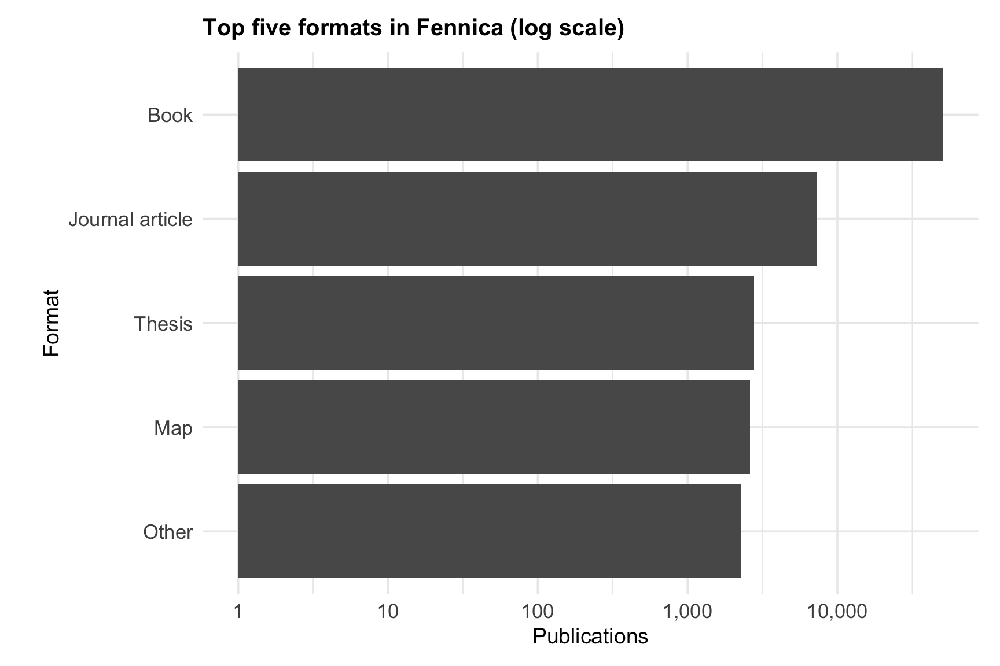
A publication-ready multi-panel figure combining publication growth, language, and format trends.
combined_plot_6 <-
(p1 + p2) /
(p3 + p4) /
(p5 + p6) +
plot_layout(guides = "collect") +
plot_annotation(
title = "Fennica metadata analysis, 1809–1917",
tag_levels = "a",
theme = theme(
plot.title = element_text(
size = 20,
face = "bold",
margin = margin(b = 18)
)
)
) &
theme(
legend.position = "bottom",
plot.tag = element_text(face = "bold", size = 16),
plot.title = element_text(face = "bold")
)
combined_plot_6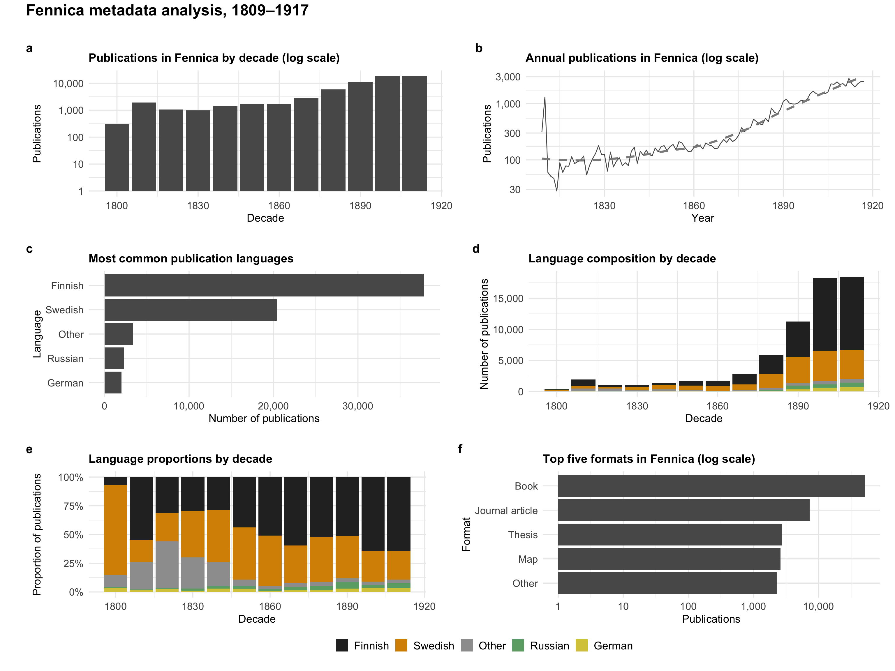
ggsave(
"fennica_combined_6panel_en.png",
combined_plot_6,
width = 16,
height = 12,
units = "in",
dpi = 300
)This section examines metadata coverage, missingness, and the interaction between publication format and language.
Publication format is extracted and key metadata fields (Author, Language, Subjects, Library, Series) are standardized.
fennica_clean <- nineteen_cen %>%
mutate(
Year = suppressWarnings(as.integer(Year)),
Decade = (Year %/% 10) * 10,
Language = tolower(trimws(Language)),
Formats = trimws(Formats),
Format = trimws(sub("\\s*[,;|].*$", "", Formats))
) %>%
filter(!is.na(Year), Year >= 1809, Year <= 1917)
fc <- fennica_clean %>%
mutate(
Year = suppressWarnings(as.numeric(Year)),
Decade = floor(Year / 10) * 10,
Language = na_if(trimws(Language), ""),
Format = na_if(trimws(Format), ""),
Author = na_if(trimws(Author), ""),
Subjects = na_if(trimws(Subjects), ""),
Library = na_if(trimws(Library), ""),
Series = na_if(trimws(Series), "")
) %>%
filter(!is.na(Year), !is.na(Decade))
format_map <- c(
"kirja" = "Book",
"lehti/artikkeli" = "Journal article",
"opinnäyte" = "Thesis",
"kartta" = "Map",
"muu" = "Other",
"peli" = "Game",
"nuotti" = "Sheet music",
"teksti" = "Text",
"kuva" = "Image"
)
lang_map <- c(
"fin" = "Finnish",
"swe" = "Swedish",
"eng" = "English",
"deu" = "German",
"ger" = "German",
"rus" = "Russian",
"fra" = "French",
"fre" = "French",
"lat" = "Latin",
"zxx" = "No linguistic content"
)
label_en <- function(x, map) {
x0 <- tolower(trimws(x))
out <- unname(map[x0])
ifelse(is.na(out), x, out)
}
fc <- fc %>%
mutate(
Format = ifelse(is.na(Format), NA_character_, label_en(Format, format_map)),
Language = ifelse(is.na(Language), NA_character_, label_en(Language, lang_map))
)Neutral colours are used here to emphasize metadata quality patterns rather than categorical distinctions.
field_cols <- c(
"Author name" = "#404040",
"Language" = "#7A7A7A",
"Series" = "#A6A6A6",
"Subjects" = "#D0D0D0"
)
heatmap_cols <- c(
"#F7F7F7",
"#D9D9D9",
"#969696",
"#525252",
"#252525"
)
base_theme <- theme_minimal(base_size = 13) +
theme(
plot.title = element_text(face = "bold", size = 14),
plot.subtitle = element_text(size = 11),
axis.title = element_text(size = 11),
axis.text = element_text(size = 10),
legend.title = element_blank(),
legend.position = "bottom",
panel.grid.minor = element_blank(),
panel.grid.major.x = element_line(linewidth = 0.25, colour = "grey88"),
panel.grid.major.y = element_line(linewidth = 0.25, colour = "grey88"),
plot.margin = margin(8, 8, 8, 8)
)Coverage is calculated as the share of records with each field present, per decade.
field_cov <- fc %>%
group_by(Decade) %>%
summarise(
`Author name` = mean(!is.na(Author)),
Language = mean(!is.na(Language)),
Series = mean(!is.na(Series)),
Subjects = mean(!is.na(Subjects)),
.groups = "drop"
) %>%
pivot_longer(
cols = c(`Author name`, Language, Series, Subjects),
names_to = "Field",
values_to = "SharePresent"
)
pA <- ggplot(field_cov, aes(Decade, SharePresent, colour = Field)) +
geom_line(linewidth = 0.8) +
geom_point(size = 1.8) +
scale_colour_manual(values = field_cols) +
scale_y_continuous(
labels = percent_format(),
limits = c(0, 1),
breaks = seq(0, 1, 0.25)
) +
scale_x_continuous(breaks = seq(1810, 1910, 20)) +
labs(
title = "A. Metadata field coverage over time",
subtitle = "Share of records with each field present",
x = "Decade",
y = "Share present"
) +
base_theme
pA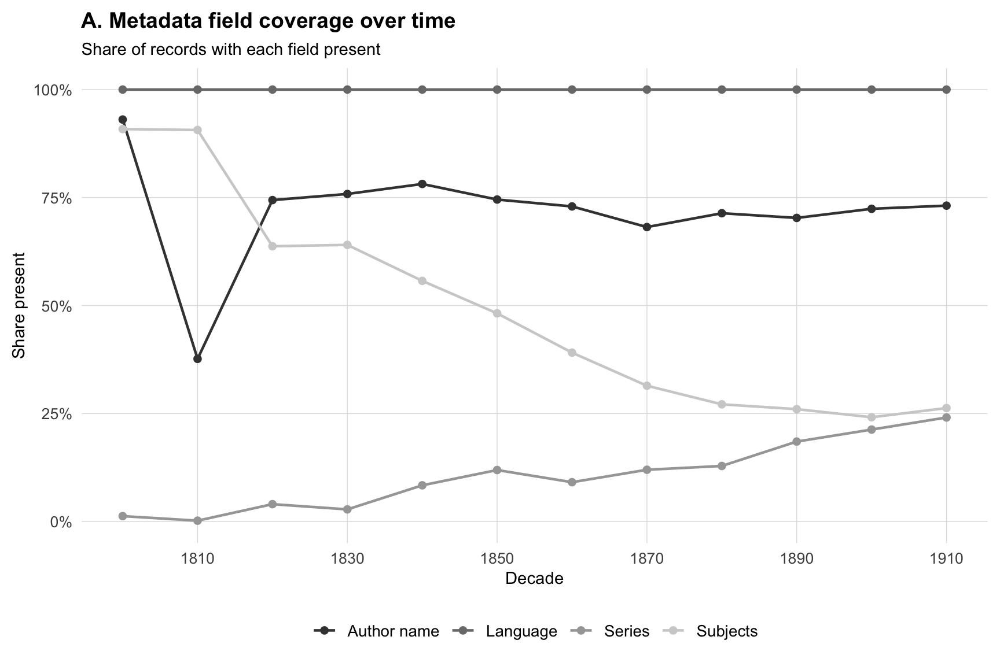
Directly quantifies missing values, complementing the coverage analysis above.
miss_long <- fc %>%
group_by(Decade) %>%
summarise(
`Author name` = mean(is.na(Author)),
Language = mean(is.na(Language)),
Series = mean(is.na(Series)),
Subjects = mean(is.na(Subjects)),
.groups = "drop"
) %>%
pivot_longer(
cols = c(`Author name`, Language, Series, Subjects),
names_to = "Field",
values_to = "MissingRate"
) %>%
mutate(Decade_f = factor(Decade))
pB <- ggplot(miss_long, aes(Decade_f, MissingRate, fill = Field)) +
geom_col(
position = position_dodge(width = 0.8),
width = 0.72
) +
scale_fill_manual(values = field_cols) +
scale_y_continuous(
labels = percent_format(),
limits = c(0, 1),
breaks = seq(0, 1, 0.25)
) +
labs(
title = "B. Field-level missingness",
subtitle = "Missing rate by decade",
x = "Decade",
y = "Missing rate"
) +
base_theme +
theme(
axis.text.x = element_blank(),
axis.ticks.x = element_blank()
)
pB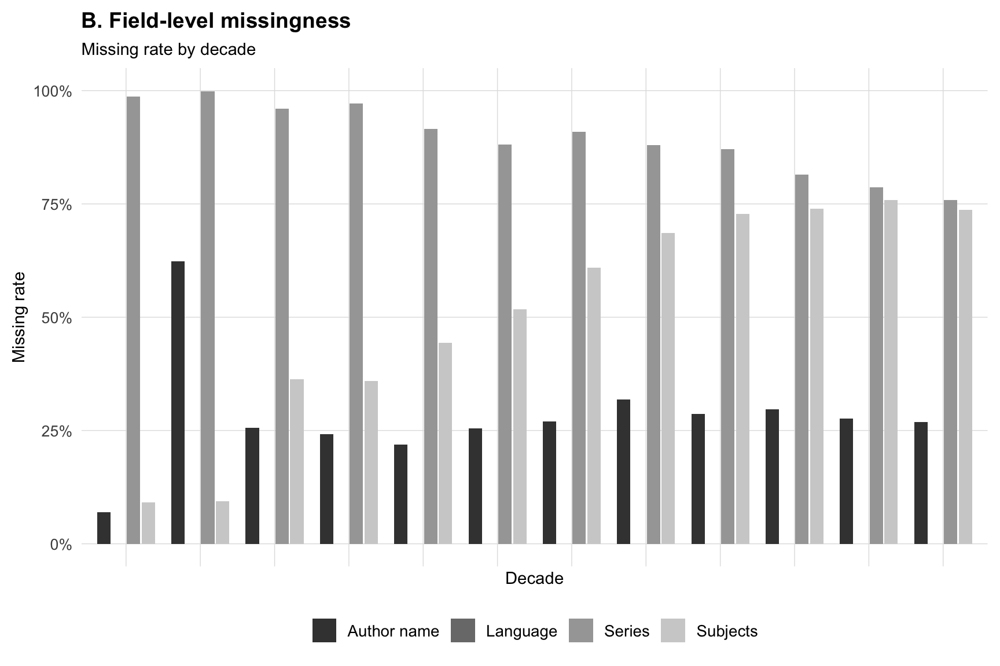
Each cell represents the proportion of a language within a format category.
lf <- fc %>%
filter(!is.na(Language), !is.na(Format)) %>%
mutate(
Format = fct_lump_n(factor(Format), n = 8, other_level = "Other"),
Language = fct_lump_n(factor(Language), n = 5, other_level = "Other")
)
prop_df <- as.data.frame(prop.table(table(lf$Language, lf$Format), margin = 2))
colnames(prop_df) <- c("Language", "Format", "share")
pC <- ggplot(prop_df, aes(Format, Language, fill = share)) +
geom_tile(colour = "white", linewidth = 0.25) +
scale_fill_gradientn(
colours = heatmap_cols,
labels = percent_format(),
breaks = c(0, 0.25, 0.50, 0.75, 1),
limits = c(0, 1),
guide = guide_colorbar(
title = "Share within format",
title.position = "top",
barwidth = unit(7, "cm"),
barheight = unit(0.35, "cm")
)
) +
labs(
title = "C. Language distribution by format",
subtitle = "Cell value = share within each format",
x = "Format",
y = "Language"
) +
base_theme +
theme(
axis.text.x = element_text(angle = 45, hjust = 1),
legend.title = element_text(size = 10),
legend.position = "bottom"
)
pC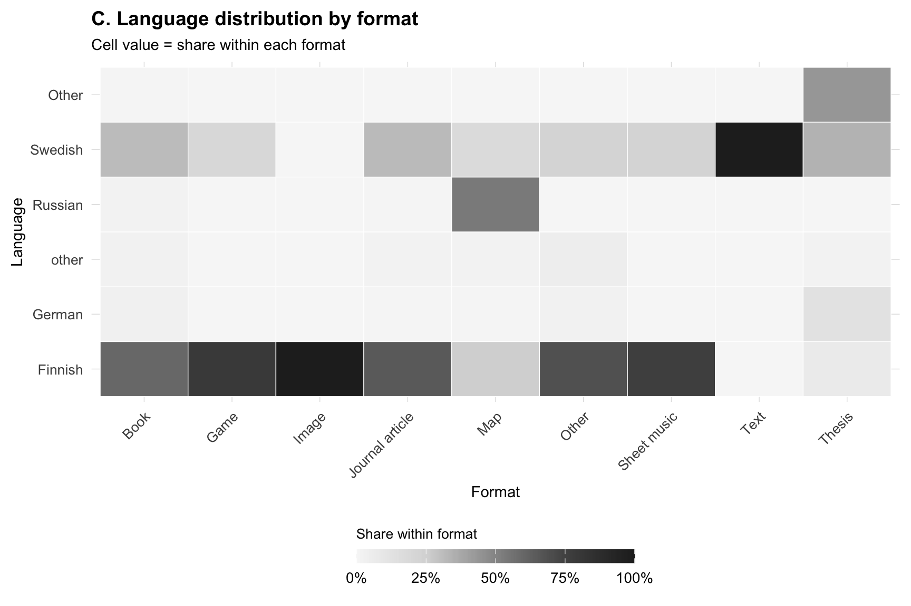
Combines coverage over time (A), missingness by decade (B), and language distribution across formats (C) into a single overview figure.
fig3 <- (pA) / (pB + pC) +
plot_layout(heights = c(1.05, 1)) +
plot_annotation(
title = "Fennica (1809–1917): Format interaction and metadata quality"
) &
theme(
plot.title = element_text(face = "bold", size = 16)
)
fig3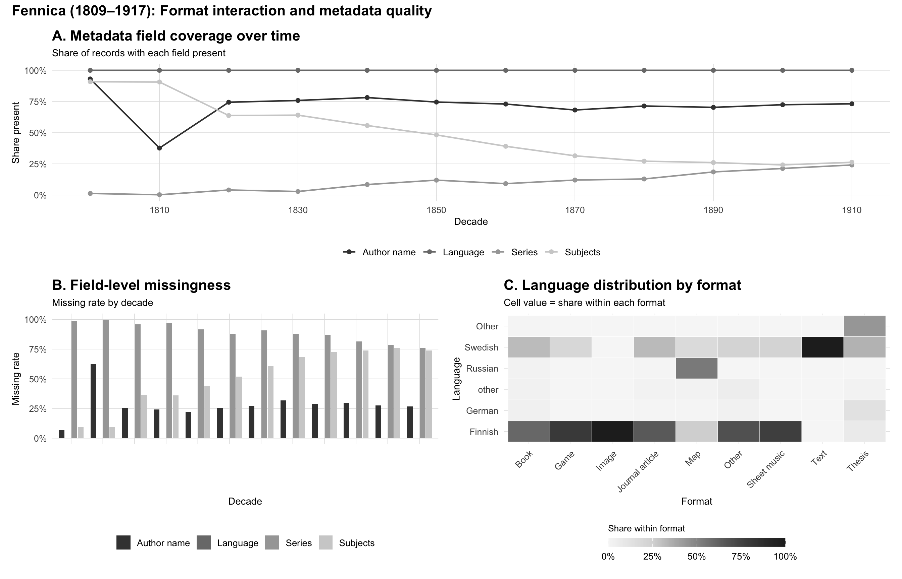
ggsave("fennica_fig3_revised_minimal.png", fig3, width = 14, height = 9, dpi = 300)